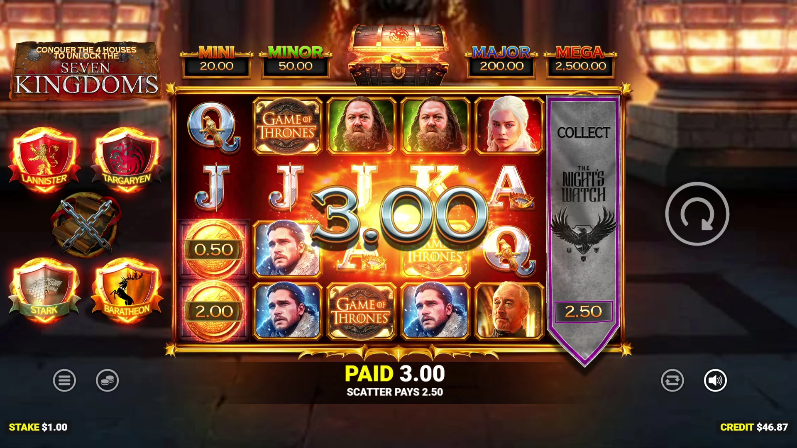

Game of Thrones - RTP, análise e onde jogar

| Provedor | Blueprint Gaming (com Warner Bros. Discovery Global Experiences) |
|---|---|
| Tipo de jogo | Caça-níqueis de vídeo |
| Tema | série de TV Game of Thrones, Casas de Westeros |
| RTP | Não revelado oficialmente pela Blueprint (ver perguntas frequentes) |
| Volatilidade | Não revelada oficialmente pela Blueprint (ver perguntas frequentes) |
| Prêmio máximo | 2.500x (jackpot fixo Mega) |
| Rolos/Linhas de pagamento | 6 rolos, 4.096 formas de ganhar |
| Data de lançamento | 1º de outubro de 2026 (lançamento nos EUA, BetMGM) |
| Celular | Não informado oficialmente pela Blueprint |
Visão geral
Game of Thrones é o caça-níqueis licenciado da Blueprint Gaming baseado na série da HBO, desenvolvido com a Warner Bros. Discovery Global Experiences e distribuído na América do Norte por meio do portfólio House of Brands da White Hat Studios.
O jogo usa seis rolos com 4.096 formas de ganhar, com um recurso Money Collect persistente que evolui à medida que os jogadores desbloqueiam habilidades ligadas às Casas Stark, Lannister, Baratheon e Targaryen.
Conseguir três ou mais símbolos Bonus ativa o Iron Throne Bonus: 10 Iron Throne Spins com a possibilidade de prêmios em dinheiro adicionais, junto com quatro jackpots fixos que vão de um Mini de 20x a um Mega de 2.500x.
Após uma estreia recorde no Canadá em abril de 2026, o jogo foi lançado nos Estados Unidos no BetMGM Casino em Nova Jersey, Michigan, Pensilvânia e Virgínia Ocidental, e no Borgata Online em Nova Jersey e Pensilvânia.
Onde jogar Game of Thrones
Nos Estados Unidos, o Game of Thrones é exclusivo do BetMGM Casino (Nova Jersey, Michigan, Pensilvânia, Virgínia Ocidental) e do Borgata Online (Nova Jersey, Pensilvânia). Fora dos EUA, os títulos da Blueprint Gaming aparecem em cassinos das nossas listas verificadas:
Nigéria | Brasil | México | Quênia | África do Sul | Colômbia
Perguntas frequentes sobre o Game of Thrones
Qual é o RTP e a volatilidade do Game of Thrones?
A Blueprint Gaming não revelou o RTP nem a volatilidade do Game of Thrones nos materiais oficiais de lançamento. Os valores exatos podem variar entre os cassinos, então confira as informações do jogo ou a tabela de pagamento dentro do jogo no cassino onde você joga.
Como funciona o recurso Money Collect?
O recurso Money Collect é persistente entre as sessões e evolui à medida que os jogadores desbloqueiam habilidades associadas à Casa Stark, à Casa Lannister, à Casa Baratheon e à Casa Targaryen, à medida que avançam em sua jornada até o Iron Throne.
Como ativo o Iron Throne Bonus?
Conseguir três ou mais símbolos Bonus ativa o Iron Throne Bonus, concedendo 10 Iron Throne Spins junto com a possibilidade de prêmios em dinheiro adicionais.
Quais são os jackpots fixos do Game of Thrones?
O Game of Thrones inclui quatro prêmios de jackpot fixos: Mini de 20x a aposta, Minor de 50x, Major de 200x e Mega de 2.500x.